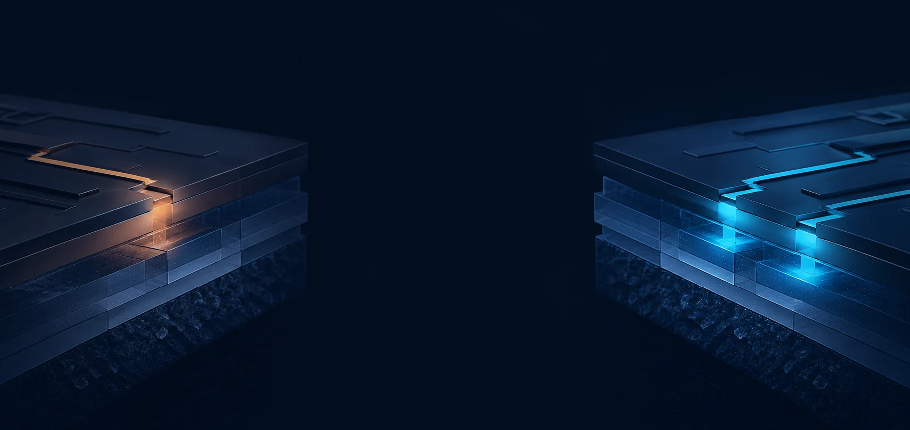
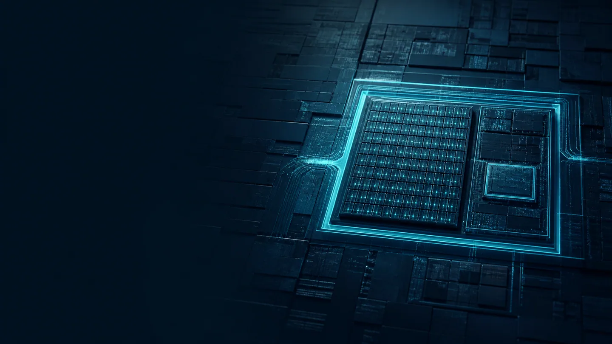

MRAM ? ReRAM
?????????????endurance ? voltage boundary?Physical mechanism, node, density, endurance and voltage boundary.
NVM KNOWLEDGE SYSTEM ? UNIFIED MONOREPO 2026
????????????NVM?????????????????Monorepo???? Secure Storage ????AI ????????TSMC IoT (22ULL?N4e) ???3D Chiplet ??????????????????????? NVM is the single knowledge spine unified into one monorepo. Spanning Secure Storage IP, AI persistent states, TSMC IoT (22ULL to N4e) roadmaps, 3D chiplet security, physical assurance, and native whitepaper decision studios.
00 ? NVM KNOWLEDGE SPINE
?????????????endurance ? voltage boundary?Physical mechanism, node, density, endurance and voltage boundary.
?? ownership??????retention???? recovery?Define ownership, update cadence, retention, security and recovery.
? NVM ??????? system need????????????Map NVM capabilities to real system needs?not merely product names.
?????????????review date ?????????Every knowledge item retains its source, limit, review date and next validation action.
SHAREPOINT CONTENT CONTRACTPOV Scope ? Opportunity Class ? Evidence Relation ? Assurance Maturity ? Source ? Limitation ? Validation Gate ? Internal Decision ? Responsibility Owner
01 ? CORE MODULE MATRIX
 01 / SECURITY ARCHITECTURE
01 / SECURITY ARCHITECTURE
SRAM PUF ? AES-256 GCM ? ANTIFUSE OTP ? CONTROLLER
? physical observability?power-off state?SRAM PUF ??????? AntiFuse OTP??????????????? ASIC ??????Build a defensible secure-storage abstraction from physical observability, power-off states, dynamic SRAM PUF key generation and AntiFuse OTP.
?? Secure Storage ??Enter Secure Storage?
XPU ? DDR5 PMIC/SPD ? TSMC 22ULL-N4e ? 3D CHIPLET ? PQC
?????? DDR5 PMIC/SPD Hub?AI VR Phase Trim????? TSMC ???? IoT (22ULL/12FFC+/N6e/N4e) 0.5V ??????3D SoIC ??? KGD ??? NIST LMS ??????Covers datacenter DDR5 PMIC/SPD, AI VR phase trim, TSMC ultra-low-power IoT (22ULL to N4e), 3D SoIC KGD attestation, and NIST LMS stateful boot.
?? AI Systems ??Enter AI Systems? 03 / NATIVE WORKBENCH ? STUDIO
03 / NATIVE WORKBENCH ? STUDIO
DECISION MATRIX ? STATE ATLAS ? EVIDENCE TAXONOMY
??????????????????? OTP?MTP?eFlash?MRAM?ReRAM ???????????????????????????????? SharePoint?Native embedded interactive whitepaper and decision workbench. Connects OTP, MTP, eFlash, MRAM and ReRAM across nodes into dynamic decision models.
???? Whitepaper StudioOpen Native Studio? 04 / PHYSICAL SECURITY & ASSURANCE
04 / PHYSICAL SECURITY & ASSURANCE
SCA/DPA ? FAULT INJECTION (FIA) ? FIB PROBING ? ASIL-D
????????????????????????? (DPA)????????/?????????FIB ?????? ISO 26262 ASIL-D ???????Evaluation across physical attack surfaces: DPA, electromagnetic leaks, laser/clock fault injection, FIB microprobing, and ISO 26262 ASIL-D compliance.
?? Security Assurance ??View Assurance?
05 / DEVICE PHYSICS & PRIMARY SOURCESTUNNEL OXIDE ? 175?C SILC LEAKAGE ? METALLIC SILICIDE
???????? 175?C ???????????? (SILC) ???????????????????????????????????????Explores trap-assisted tunneling (SILC) leakage in floating gates at 175?C versus permanent metallic silicide filaments; backed by primary source ledgers.
?? Memory PhysicsRead Physics?
06 / EXECUTIVE DECISION & V18 SUITE17-SLIDE MASTERPIECE ? SPEAKER NOTES ? QUALIFICATION GATES
?????????? 17 ??????v18??????????5 ??????????DDR5, AI Power, Platform Trust, TSMC IoT Continuum, 3D Chiplets???????????? briefing/ ???17-slide executive qualification deck (v18), full speaker notes, and 5 target qualification briefs for DDR5, AI power, trust, TSMC IoT, and 3D chiplets.
?? Executive BriefOpen Executive Brief?02 ? KNOWLEDGE WORKBENCH
NVM TECHNOLOGY ? STATE CONTRACT ? EVIDENCE
? technology family?process node?state contract ? evidence class????????? technical whitepaper?decision matrix ? SharePoint transfer model?Organize research from technology family, process node and state contract through evidence class into a technical whitepaper, decision matrix and SharePoint transfer model.
???? Whitepaper StudioOpen Native Whitepaper Studio?03 ? RESEARCH LIBRARY
04 ? CLAIM GOVERNANCE
???????????????? target-silicon ????????????????????????Public sources, vendor claims, architecture inferences and target-silicon evidence are kept distinct. This is the governance rule shared by every topic.
?????????????????Define who speaks and whose conclusion the artifact may carry
?? requirement?official case?technical evidence?disclosure ? inferenceSeparate requirements, official cases, technical evidence, disclosures and inferences
??????????????? gateKeep scope, limitation and the next validation gate visible
?? SharePoint ??? portfolio disposition ??? ownerAdd portfolio disposition and responsibility owner only in the authorized internal layer